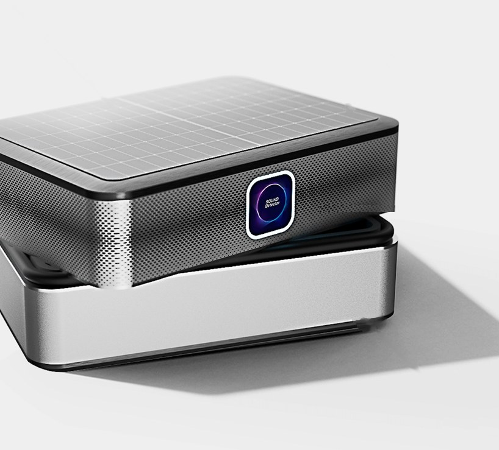
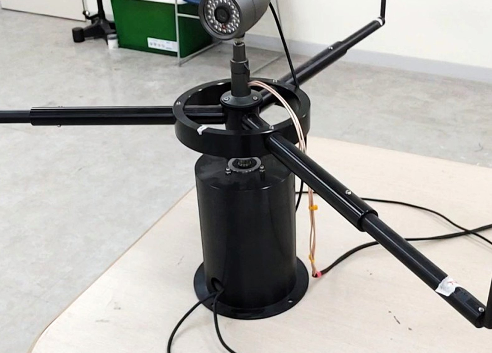

도시의 소리를
데이터로
커즈모스는 도시와 산업 현장의 소리를 AI 센서로 측정합니다. 언제, 어디서, 어떤 소리가 났는지 기록해 담당자가 현장 상황을 확인하고 대응할 수 있도록 돕습니다.
소음·진동은 환경 민원에서 가장 큰 비중을 차지합니다. 민원을 해결하려면 언제, 어디서 소음이 발생했는지 알아야 하지만, 이를 확인할 측정 기록은 부족한 실정입니다.
소리를 감지하고
담당자에게 알립니다
센서가 현장에서 소리를 분석한 뒤 필요한 정보만 서버로 보냅니다. 담당자는 관제 화면에서 소리의 종류와 발생 위치를 함께 확인할 수 있습니다.
24시간 소리를 듣습니다
도시 곳곳에 설치한 소형 AI 센서가 소리를 실시간으로 측정합니다. 사람이 현장에 머물며 측정하지 않아도 시간대별 기록을 남길 수 있습니다.
- 실시간 상시 측정
- 태양광 패널 일체형 설계
- CCTV 지주·차량검지 지주에 바로 설치
소리의 종류와 위치를 찾습니다
여러 마이크에 들어온 소리를 비교해 발생 방향과 위치를 추정합니다. AI는 이륜차 소음이나 경적, 설비 이상음 등 소리의 종류를 구분합니다.
- 이륜차·경적·공사·설비 이상음 분류
- 마이크 배열 기반 음원 위치 추정
- 영상 센서와 함께 판단
필요한 사람에게 알립니다
소리를 감지하면 관제 화면에 알림을 보내고, 연결된 카메라를 소리가 난 방향으로 돌립니다. 시간대와 장소별로 남긴 기록은 민원을 처리하거나 소음 대책을 세울 때 참고할 수 있습니다.
- 관제 시스템 알림·카메라 연동
- 시간대·장소별 소음 기록
- 민원 처리·정책 판단 근거 데이터

소음 측정이 필요한 곳에
설치하는 작은 AI 센서
기존 자동 측정소는 반경 500m에 한 곳, 설치비는 1천만 원 수준입니다. 커즈모스 센서는 크기가 작고 설치가 간편해 소음을 확인해야 하는 지점마다 배치할 수 있습니다.
- 실시간 감지사람이 없어도 24시간 측정
- AI 소리 분류이륜차·경적·공사음 등 소리 종류 구분
- 위치 추정마이크 배열로 소리가 난 곳 계산
- 엣지 컴퓨팅기기 안에서 바로 분석
- 멀티모달 AI영상 등 다른 센서와 함께 판단
- 빅데이터 서비스쌓인 기록으로 지역 소음 분석
도시의 소음부터
산업 현장의 이상음까지

스마트시티 소음 관측
이륜차나 공사장 소음으로 민원이 반복되는 지역에 센서를 설치합니다. 어떤 소음이 어느 시간대에 발생하는지 기록해 민원 대응에 필요한 자료를 제공합니다.
자세히 보기
산업안전 이상음 탐지
카메라에 보이지 않는 곳에서 발생한 이상음을 감지합니다. 소리가 난 방향으로 CCTV를 돌리고 관제 화면에 알림을 보내 담당자가 현장을 확인하도록 돕습니다.
자세히 보기
휴대용 초음파 카메라
센서가 감지한 이상 징후를 현장에서 확인할 때 사용합니다. 초음파가 발생하는 위치를 카메라 영상에 겹쳐 보여 주어 문제 지점을 찾을 수 있습니다.
자세히 보기실제 설치 현장에서 확인한 결과
지자체와 공공기관 현장에 센서를 설치하고, 소리 감지 성능과 설치 전후의 변화를 확인했습니다.
설치 지역 한정, 2025.12~2026.06
2025 회사 최종보고서 기준
태안화력발전소 PoC
태안화력발전소 PoC
민원 감소는 센서를 설치한 지역에 한정한 수치이며, 단속 없이 관측과 안내만 운영한 기간의 결과입니다.
함께한 기관